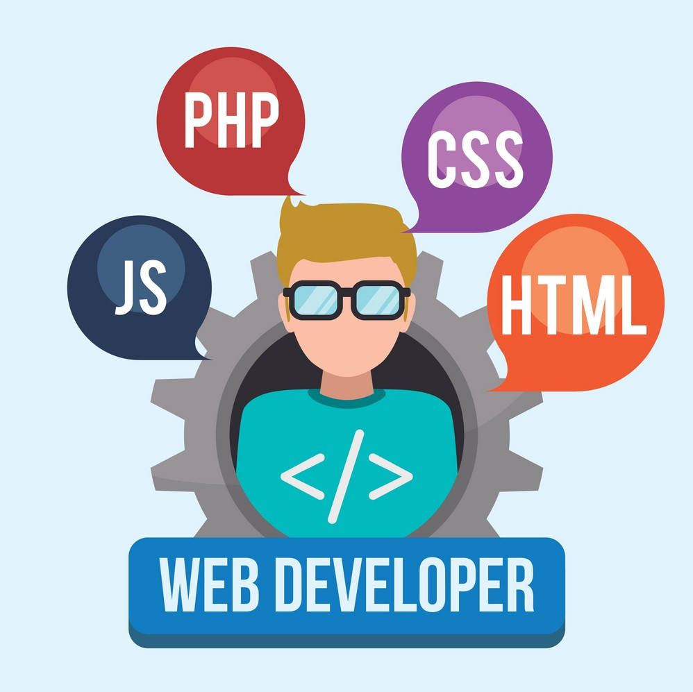

app/web developer
Description
As an app/web developer, you will be responsible for overseeing the development of a public website and iOS/Android application. You will be responsible for developing, updating and maintaining an app and website, writing source code, and testing the website and application. You should have an extensive knowledge of web and app development, database management, and an ability to maintain an excellent workflow in a fast-paced development cycle.
Responsibilities
Developing and maintaining an application and website.
Working with QA to ensure an excellent customer experience.
Managing information databases.
Requirements
Bachelor of Computer Science or equivalent experience (3 years in the web and app development industry)
Proven experience in the development and ongoing maintenance of a website or application.
Proven experience in database management.
Experience working with Java.
Excellent communication skills and the ability to work both alone and in a team setting.
qa lead
Description
As a QA Lead, you will be responsible for maintaining our high standards of quality that our customers expect from our application and website. You will be rigorously testing our product to ensure that our customers have a consistently great experience both on a technical level and from a design view. You will be responsible for consulting with external QA contractors and ensuring that they are testing our product to the high standards we expect. The ideal candidate will have excellent written and oral skills as well as experience in team management.
Responsibilities
Working with an external QA team to test our product.
Working with each department on the team to communicate issues.
Maintaining an issue ticket system for keeping close track of issues.
Requirements
Prior QA experience in both a website and application.
Excellent written and oral communication skills.
Some experience in Java.
An eye for detail.
An IT qualification will be looked upon favourably but is not required.
ui designer

Description
As a UI Designer, you will be responsible for creating the user interface for our new application and website. You will be in charge of designing the form and function of the website and app, and will work closely with the developer to implement your vision. You will have an excellent eye for visual design and an understanding of what makes a website and application look and feel good for the user.
Responsibilities
Designing the art and developing a memorable visual identity for our product.
Designing the user interface of the website and application.
Working closely with the developer to bring your design to life.
Creating visual prototypes of your design using prototyping software.
Requirements
An extensive portfolio of prior work in website and application design.
Excellent written and oral communication skills.
Excellent teamwork skills.
An eye for detail.
Experience in app prototyping software such as Figma.
content writer/researcher
Description
As a Content Writer/Researcher, you will be responsible for researching and writing the content for our website and application. You will oversee the accurate and reliable science-based content our customers will desire, and you must have an excellent eye for detail and the ability to check your own work for errors as-you-go. The content you will be writing will focus on the toxicity of common household items, chemicals and plants in cats.
Responsibilities
Researching academic journals and other reliable sources up-to-date scientific research.
Maintaining a bibliography of all scientific sources.
Working closely with the team to implement your work accurately.
Updating out-of-date information as soon as updated research becomes available.
Requirements
An extensive portfolio of prior writing, preferably technical or scientific writing.
Excellent written and oral communication skills.
Excellent research skills.
Prior experience writing for a website or application is preferred but not required if you have a strong portfolio of other writing.
Able to build and maintain a consistent workflow in a fast-paced environment.